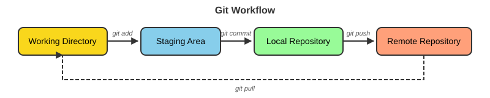
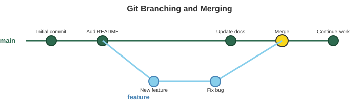

20 Version Control with Git and GitHub
After completing this chapter, you will be able to:
- Explain why version control is essential for research
- Configure Git on your computer
- Create and manage Git repositories
- Track changes with commits
- Work with remote repositories on GitHub
- Use branches for parallel development
- Publish websites using GitHub Pages
20.1 Why Version Control?
Science demands precision and reproducibility. When you publish a paper, readers should be able to understand exactly what you did and replicate your results. Yet many researchers manage their code and manuscripts with methods that would horrify their inner scientist.
Have you ever had files named like this?
analysis_final.R
analysis_final_v2.R
analysis_final_v2_REALLY_FINAL.R
analysis_final_v2_REALLY_FINAL_fixed.R
analysis_final_v2_REALLY_FINAL_fixed_AFTER_REVIEWER2.RThis ad-hoc versioning might seem harmless, but it creates real problems. Which version produced the figures in your paper? What changed between version 2 and the “REALLY_FINAL” version? If you discover an error, can you trace it back to when it was introduced?
Version control solves these problems by systematically tracking changes to files over time. It’s like having a time machine for your project—you can go back to any point in history, see exactly what changed and when, and understand why each change was made.
The concept isn’t new to science. Laboratory notebooks have always served a similar purpose: documenting what was done, when, and by whom. Version control is simply the digital equivalent for code and text, with superpowers that paper notebooks can’t match.
Version control systems provide:
Complete History. Every change is recorded. You can see what changed, when, and why.
Safe Experimentation. Try new approaches without fear. You can always return to a working version.
Collaboration. Multiple people can work on the same project without overwriting each other’s work.
Backup. Your code exists in multiple places, protecting against data loss.
Reproducibility. Tag specific versions for publications. Anyone can access exactly what you used (Blischak et al., 2016; Ram, 2013; Wilson et al., 2017).
While we focus on code, version control is equally valuable for manuscripts, theses, and any text-based work. Many researchers now write papers in LaTeX or Markdown and track every revision with Git. Reviewer asked you to change something, then asked you to change it back? No problem—it’s all in the history.
20.2 Git: Distributed Version Control
Git is the most widely used version control system (Chacon & Straub, 2014). Created by Linus Torvalds (who also created Linux), Git is:
- Distributed: Every copy is a complete repository with full history
- Fast: Operations happen locally without network delays
- Flexible: Supports many workflows from solo to large team projects
Key Concepts
Understanding Git’s mental model (Figure 20.1) helps everything else make sense:

git add), into the local repository (git commit), up to the remote (git push), and back down (git pull)
Working Directory. The files you see and edit on your computer.
Staging Area (Index). A preparation area where you compose your next commit.
Local Repository. The .git directory containing all version history.
Remote Repository. A copy hosted elsewhere (like GitHub) for backup and collaboration.
20.3 Setting Up Git
Installation
Check if Git is already installed:
If not installed:
Configuration
Configure your identity (this appears in your commit history):
The --global flag sets these options for all repositories on your computer. You can override them per-repository by omitting --global while inside a specific repo.
20.4 Creating a Repository
Method 1: Initialize Locally
Create a new repository from an existing directory:
Method 2: Clone from GitHub
Copy an existing repository:
20.5 Basic Git Workflow
The daily rhythm of Git involves four main commands: status, add, commit, and push. Don’t be intimidated by the number of Git commands that exist—most researchers use only a handful regularly, and you can be highly productive knowing just these four.
Think of the Git workflow like preparing a package to ship:
- You work on your files (working directory)
-
You decide what to include (
git add→ staging area) -
You seal and label the package (
git commit→ local repository) -
You send it out (
git push→ remote repository)
Each commit is like a snapshot of your project at a moment in time, labeled with a message explaining what changed. Over time, these commits form a complete history of your project’s evolution.
Checking Status
Always start by checking your repository’s status:
$ git status
On branch main
Your branch is up to date with 'origin/main'.
Changes not staged for commit:
(use "git add <file>..." to update what will be committed)
modified: analysis.R
Untracked files:
(use "git add <file>..." to include in what will be committed)
new_data.csv
no changes added to commit (use "git add" and/or "git commit -a")Staging Changes
Add files to the staging area:
Committing Changes
Record staged changes with a descriptive message:
A good commit message:
- Uses present tense: “Add feature” not “Added feature”
- Is concise but descriptive
- Explains what and why, not how
- References issues if applicable: “Fix alignment bug (#42)”
Bad: “updates”
Good: “Add GC content calculation to genome analysis”
Viewing History
See your commit history:
Each commit is identified by a unique hash (7d4e8c2 below is the short form) and records the author, date, and message, which is why a good message matters.
Example output:
$ git log --oneline
7d4e8c2 (HEAD -> main) Add initial data analysis script
3a1b2c3 Update README with project description
9f8e7d6 Initial commit20.6 Working with GitHub
GitHub is a web-based platform for hosting Git repositories. It adds:
- Cloud backup for your code
- Collaboration features (issues, pull requests)
- Project management tools
- Free website hosting (GitHub Pages)
- Integration with other services
For a research project specifically, GitHub gives you:
Reproducibility. The complete history of how an analysis developed, not just its final state.
Documentation. A README.md on the repository’s front page, a wiki, and GitHub Pages for a project website (Section 20.11).
Issues. A built-in tracker for bugs, ideas, and to-dos that stays with the code. Referencing an issue number in a commit message (“Fix normalization bug (#12)”) links the two.
Releases and DOIs. When you submit a paper, tag the exact version of the code it used (git tag -a v1.0 -m "Version used in manuscript"; see Section I.11) and create a release from that tag on GitHub. Connecting the repository to Zenodo turns each release into an archived copy with a citable DOI (Section E.5), which is what journals and funders increasingly ask for.
Creating a GitHub Account
- Go to github.com
- Click “Sign up”
- Choose a professional username
- Use your academic email for the Student Developer Pack
Apply for the GitHub Student Developer Pack for free access to premium features and developer tools.
Connecting Local to Remote
After creating a repository on GitHub:
# Add remote repository (origin is conventional name)
$ git remote add origin https://github.com/username/repository.git
# Verify the remote
$ git remote -v
origin https://github.com/username/repository.git (fetch)
origin https://github.com/username/repository.git (push)
# Push your commits to GitHub
$ git push -u origin mainThe -u flag sets up tracking, so future pushes only need git push.
Push and Pull
Pushing sends your local commits to GitHub:
Pulling retrieves commits from GitHub:
Fetching downloads new commits from GitHub without merging them into your files:
git pull is exactly git fetch followed by git merge. Use fetch when you want to see what collaborators have changed before it touches your working directory—for example, when you are in the middle of something and are not sure whether the incoming changes will conflict with yours.
Always pull before starting work to get any changes from collaborators. Push frequently to back up your work.
20.7 Branching
Branches let you develop features in isolation without affecting the main codebase (Figure 20.2).

feature branch diverges from main, collects commits, and is merged back
Creating and Switching Branches
git switch vs. git checkout
git switch was added in Git 2.23 (2019) to do one job—move between branches—clearly. The older git checkout does the same thing (git checkout feature-analysis, git checkout -b feature-analysis) and several unrelated things, such as discarding changes to a file. You will still see checkout everywhere in tutorials, Stack Overflow answers, and older scripts; it works fine, and the two are interchangeable for branch operations. This book uses switch for branches and restore for undoing file changes because each command name says what it does.
Merging Branches
When your feature is complete, merge it back to main:
Resolving Conflicts
If Git can’t automatically merge changes, you’ll get a conflict:
The file will contain conflict markers:
To resolve:
- Edit the file to keep the code you want
- Remove the conflict markers (
<<<<<<<,=======,>>>>>>>) - Stage and commit the resolved file
20.8 Pull Requests
Pull requests (PRs) are GitHub’s mechanism for proposing changes and requesting code review. They’re central to collaborative workflows and open-source contributions.
Creating a Pull Request
After pushing a branch to GitHub:
- Navigate to your repository on GitHub
- You’ll see a prompt: “Compare & pull request” — click it
- Add a descriptive title and summary of your changes
- Assign reviewers if working with collaborators
- Click “Create pull request”
Reviewers can then:
- Comment on specific lines of code
- Request changes
- Approve the PR
Once approved, click “Merge pull request” to integrate the changes into the main branch.
Pull requests aren’t just for teams! Use them on solo projects to:
- Document significant changes with a summary
- Review your own code before merging
- Keep a clean history of feature additions
Pushing Branches to GitHub
To share a branch with collaborators or create a PR:
20.9 Forking
Forking creates your own copy of someone else’s repository under your GitHub account. It’s different from cloning:
- Clone: Direct copy linked to the original repo
- Fork: Independent copy on your GitHub account (which you then clone)
When to Fork
- Contributing to open-source projects
- Using someone’s code as a starting point for your own project
- Experimenting with changes you don’t have permission to push
Fork Workflow
- Click “Fork” on the GitHub repository page
- Clone your fork to your local machine
- Make changes and push to your fork
- Create a pull request to the original repository
This is how most open-source software is developed—outside contributors fork, improve, and submit pull requests back to the main project.
Keeping a fork synchronized with the original (“upstream”) repository requires additional steps. See GitHub’s guide on Syncing a fork.
Starting from a Template Repository
Some repositories are marked as templates (course assignment scaffolds are often distributed this way). A template gives you a fresh repository that starts with the template’s files but has no connection to the original: its history begins at your first commit, and there is no upstream to sync with or open pull requests against. Use a template when you want a starting point; fork when you want to contribute changes back.
- On the template’s GitHub page, click the green Use this template button and choose Create a new repository
- Pick an owner (your account) and a name, and decide whether it should be public or private
- Click Create repository
- Clone your new repository to your computer as usual:
| Fork | Template | |
|---|---|---|
| Shares history with the original | Yes | No |
| Can open pull requests upstream | Yes | No |
| Typical use | Contributing to a project | Starting your own project from a scaffold |
20.10 The .gitignore File
Not everything should be tracked. The .gitignore file specifies intentionally untracked files:
Common patterns for scientific projects:
# Data files (too large or sensitive)
*.fastq
*.fastq.gz
*.bam
*.vcf
data/raw/*
# R artifacts
.Rhistory
.RData
.Rproj.user/
# Python artifacts
__pycache__/
*.pyc
.ipynb_checkpoints/
# Output files
results/temp/*
*.log
# System files
.DS_Store
Thumbs.db
# Credentials (NEVER commit these!)
*.pem
.env
secrets.txtAdd .gitignore early! Once files are tracked, adding them to .gitignore won’t untrack them.
20.11 GitHub Pages: Free Website Hosting
GitHub Pages turns your repository into a website—perfect for project documentation, lab websites, or personal portfolios. Figure 20.3 shows the path from Quarto source to a live site.

Setting Up GitHub Pages
- Go to your repository on GitHub
- Click Settings → Pages
- Under “Source”, select Deploy from a branch
- Select branch: main and folder: /docs (or root)
- Click Save
Your site will be live at: https://username.github.io/repository/
For Quarto Projects
In your _quarto.yml (see Section 5.13 for project layout):
Then render and push:
20.12 Best Practices
Repository Organization
project/
├── README.md # Project description (always include!)
├── LICENSE # How others can use your code
├── .gitignore # Files to ignore
├── data/ # Data files (consider .gitignore for large files)
│ ├── raw/ # Original, immutable data
│ └── processed/ # Cleaned data
├── scripts/ # Analysis scripts
│ ├── 01_clean.R
│ └── 02_analyze.R
├── results/ # Output files
└── docs/ # Documentation or websiteCommit Frequency
- Commit early, commit often
- Each commit should be a logical unit of change
- Don’t commit half-finished work to
main - Use branches for experimental work
Collaboration Workflow
For team projects:
- Pull before starting work
- Create a branch for your changes
- Make commits with clear messages
- Push your branch to GitHub
- Create a Pull Request for review
- After approval, merge to main
20.13 Authentication: HTTPS vs SSH
The first time you git push to GitHub, Git has to prove that you are you. GitHub removed password authentication for Git operations in 2021, so typing your GitHub password at the prompt will not work—you need one of the three methods below. Pick one and set it up once.
Option 1: SSH Keys (recommended for regular use)
SSH uses a pair of cryptographic keys: a private key that stays on your computer and a public key you give to GitHub. Once configured you never type a credential again. The same key pair can be used for logging in to Talapas (Section 16.4.1).
# 1. Generate a key pair (press Enter to accept the default location;
# a passphrase is optional but recommended)
$ ssh-keygen -t ed25519 -C "you@uoregon.edu"
# 2. Print the PUBLIC key and copy the whole line
$ cat ~/.ssh/id_ed25519.pub
ssh-ed25519 AAAAC3NzaC1lZDI1NTE5AAAA... you@uoregon.edu
# 3. Test the connection once the key is added to GitHub (see below)
$ ssh -T git@github.com
Hi username! You've successfully authenticated, but GitHub does not provide shell access.Between steps 2 and 3, add the public key to your account: on GitHub, go to your profile photo → Settings → SSH and GPG keys → New SSH key, paste the line you copied, give it a name such as “laptop”, and save. Then use SSH-style URLs when cloning or adding a remote:
Never share or commit the private key (~/.ssh/id_ed25519, no .pub). GitHub’s guide on Connecting with SSH covers the details, including Windows and macOS keychain setup.
Option 2: HTTPS with a Personal Access Token
If you keep the https://github.com/... URLs, Git will prompt for a username and password. The “password” must be a personal access token, not your account password. Create one at your profile photo → Settings → Developer settings → Personal access tokens → Fine-grained tokens → Generate new token. Give it a name and expiration date, choose which repositories it may access, and under Repository permissions set Contents to Read and write. Copy the token immediately—GitHub shows it only once—and paste it when Git asks for your password. Enable credential caching (below) so you are not asked on every push.
Option 3: The GitHub CLI
The GitHub CLI (gh) can set up authentication for you interactively:
Answer the prompts (GitHub.com, HTTPS or SSH, log in with a web browser), and gh stores the credential and configures Git to use it. This is often the quickest route on a new machine.
Credential Caching (HTTPS)
Avoid entering credentials repeatedly:
20.14 Line Endings Across Operating Systems
Different operating systems use different characters to mark line endings:
- Linux/macOS: LF (Line Feed)
- Windows: CRLF (Carriage Return + Line Feed)
This can cause Git to show changes on lines you didn’t edit when collaborating across operating systems.
Solution
Configure Git to handle line endings automatically:
20.15 Temporarily Saving Changes: Git Stash
Sometimes you need to switch branches but aren’t ready to commit your current changes. git stash temporarily saves your work:
This is useful when you need to quickly switch context—perhaps to fix an urgent bug on another branch—without committing incomplete work.
20.16 Troubleshooting
Common Issues and Solutions
Q: I made changes to the wrong branch!
Q: I edited a file and want to throw away my changes
git restore is the modern command for this job; the older syntax you will still see is git checkout -- analysis.R. Either way, discarded changes are gone for good, so be sure before you run it.
Q: I want to undo my last commit (but keep the changes)
Q: I committed something I shouldn’t have
Q: Everything is broken!
When all else fails, you can always clone a fresh copy:
For more Git emergencies, visit ohshitgit.com — a humorous but genuinely helpful resource for common Git mistakes.
When to Commit?
Commit early and often. A good rule of thumb:
- Commit when you’ve completed a logical unit of work
- Commit before trying something experimental
- Commit at the end of each work session
- If you’re asking “should I commit?” — the answer is usually yes
20.17 Useful Commands Reference
Table 20.2 collects the commands used in this chapter.
| Command | Description |
|---|---|
git init |
Initialize new repository |
git clone <url> |
Copy remote repository |
git status |
Show current state |
git add <file> |
Stage changes |
git commit -m "msg" |
Record staged changes |
git push |
Upload to remote |
git pull |
Download from remote and merge |
git fetch |
Download from remote without merging |
git branch |
List branches |
git switch <name> |
Switch to a branch |
git switch -c <name> |
Create and switch branch (older syntax: git checkout -b <name>) |
git restore <file> |
Discard unstaged changes to a file (older syntax: git checkout -- <file>) |
git merge <branch> |
Merge branch |
git log --oneline |
View commit history |
git log -p |
View history with the changes in each commit |
git diff |
Show unstaged changes |
git stash |
Temporarily store changes |
git help <command> |
Open the manual page for any command (e.g. git help log) |
For a comprehensive reference of Git commands and workflows, see Appendix I.
20.18 Summary
Version control with Git and GitHub is essential for modern research:
- Git tracks all changes to your files with complete history
- The workflow is: edit → stage → commit → push
- Branches enable parallel development and experimentation
- GitHub provides cloud hosting, collaboration, and free websites
- Good practices include meaningful commits, .gitignore, and regular pushing
Learning Git has a steep initial curve, but the investment pays dividends throughout your career. Start simple, use it consistently, and gradually adopt more advanced features.
For a complete reference of Git commands with detailed syntax and workflows, see Appendix I.
Additional Reading
- Happy Git and GitHub for the useR — Excellent guide for R users by Jenny Bryan
- Pro Git Book — Comprehensive free reference (Chacon & Straub, 2014)
- GitHub Documentation — Official guides
- Software Carpentry Git Lesson (Software Carpentry, 2024) — Beginner-friendly tutorial
- Oh Shit, Git!?! — Solutions for common Git mistakes
- Quarto + GitHub Pages — Publishing documentation
Exercises
Exercise 1: First Repository
- Create a new directory for a test project
- Initialize it as a Git repository
- Create a README.md file with a project description
- Stage and commit the file
- View your commit history
Exercise 2: GitHub Integration
- Create a new repository on GitHub (don’t initialize with README)
- Connect your local repository to GitHub
- Push your commits
- Verify your files appear on GitHub
Exercise 3: Branching Practice
- Create a branch called
add-analysis - Add a new script file on that branch
- Commit your changes
- Switch back to main
- Merge the branch
- Delete the branch
Exercise 4: Collaboration Simulation
- Clone a repository (your own or a public one)
- Make changes on GitHub directly (edit a file in the browser)
- Pull those changes to your local repository
- Make local changes and push them back